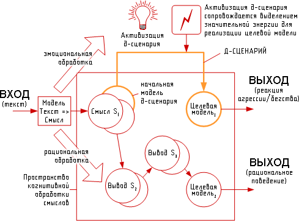

А чем докажете, что суггестия есть?
Иногда можно натолкнуться на непонимание вида «а докажите, что эта самая суггестия есть», «я вот никакой суггестии не вижу» и т.п.
Честно говоря, это ровно из той же серии, что и «нет у меня никакого бессознательного!» — встречал и такой «аргумент» некогда.
Сложность в том, что психология не является естественнонаучной дисциплиной в полном смысле этого слова — т.е. мы не можем подключить некий прибор и выяснить, что на имярек действовала суггестия силой 25 условных единиц, а воздействие он ощутил на 14. Более того, «суггестия» — термин не строго конвенциальный (в психологии и с этим сложности), чаще всего понимается как «внушение лично индивидууму», иногда этот термин даже используют как синоним гипноза, особенно в расширенном понимании (нейро-лингвистическое программирование и т.п.). В этой же работе рассматривается суггестия в смысле воздействия на массы — и нельзя забывать, что «условная психика толпы как холистичного конгломерата» вовсе не равна сумме психик составляющих толпу индивидов. Это — вполне конвенциальная теория, так что раскрывать здесь тему излишне. См., например, уже классические работы: С. Сигеле «Преступная толпа», З. Фрейд «Психология масс и анализ человеческого “Я”», Х. Ортега-и-Гассет «Восстание масс».
Суггестия, как я трактую ее здесь — это воздействие не на индивидуума, а на толпу, и результат является статистическим. Таким образом, тезис «а на меня это не действует» не является контрарзуметом.
Более того, заявление «на меня не действует» очень смешно смотрится, когда видно, как имярек попался на суггестию — и не видит ее именно поэтому. В этой работе процитировано множество примеров вида «я не вижу никакого предательства» — когда оно, несомненно, есть. Конечно, это зависит от дефиниции термина «предатальство» (разбирается далее), но обратите внимание — возражения по большей части идут не в виде «я понимаю под предательством несколько другое, так что предал Салли или нет — зависит от определения, давай обсудим», а вовсе даже «нет там никакого предательства!».
Понятно, в чем разница? В первом случае — логичный подход, попытка разобраться в вопросе; во втором — психологическая защита своей иллюзии, в связи с чем — отрицание факта вместо обсуждения его трактовки. Полная аналогия: сколько не указывай христианину на то, что Иисус — еврей, Яхве — еврейский бог, Ветхий завет является священной книгой и в иудаизме тоже, что есть даже официальный церковный праздник «обрезания господня», он все равно будет талдычить, что-де «бог всеобщий». Пользуясь случаем, рекомендую книгу Марка Абрамовича «Иисус, еврей из Галилеи» — очень хорошо расписано, что Иисус в своих действиях не выходил из рамок современного ему иудаизма. Но не будем отвлекаться.
Так вот. Помните, Юнг как-то написал про то, что ему многие предъявляли претензии в «антинаучности», но при этом никто не смог предложить теорию, которая объясняла бы то же, что объясняет теория архетипов? Вот и тут — ровно то же самое: если нет суггестии, действующей бессознательно, то почему так много индивидов (включая вполне неглупых) реагируют именно психологической защитой — мол, нет предательства?
Я считаю, именно потому, что есть понимание, что предательство есть, если судить логически, но при этом бессознательно поступки предателя импонируют, идет отрицание — мало кто добровольно станет называть себя предателем, это уже за гранью здоровой психики. Вот и идет оправдывание Салли — далее варианты будут подробно разобраны — вместо честного признания вида «да, ситуация сложная и трагическая, Салли стал предателем, чего можно было бы избежать при разумных действиях персонажей». Но нет — варианты «как было бы разумнее» обсуждаются, но всенепременно с «Салли — не предатель, Салли хороший!» — что однозначно указывает на психологическую защиту, берущую начало в «я бы на его месте так же поступил бы».
Если кто-либо видит другой вариант, кроме суггестии (и осознанного предательства, разумеется, но сейчас не о том) — внимательно слушаю. Напишите на мыло, добавлю в текст (если будет что умное и здесь уже не разобранное).
Это было в общем виде, далее разберу вопросы, которые мне задавали при обсуждении бета-версии.
«Есть моменты, вызывающие пока некоторые сомнения. Например, “шоу” и “спецэффекты” могут привести не к отключению критического мышления, а к полному по сути игнорированию сюжета. Тогда не понятно, какая, вообще говоря, идея будет заложена человеку в голову, ведь идея по определению нечто осмысленное».
Суггестия — бессознательна. Для того, чтобы она работала, реципиенту не надо осмысливать идею, более того — в этом случае будет убеждение, а не суггестия. Сюжет идет сам по себе (должен же он быть в фильме) и несет свою нагрузку, суггестия же идет параллельно. Из уже упоминавшейся книги «Манипуляция сознанием–2», глава 23.2. «Спецэффекты»:
«Использование специальных эффектов призвано отвлечь внимание реципиента или воздействовать на его эмоции таким образом, чтобы они не позволяли сознанию адекватно оценивать происходящее. …
Яркое, нестандартное происшествие, факт, сильно выделяющийся из общей линии обсуждения, нечто запоминающееся и впечатляющее — все это (при умелом использовании) эффективно воздействует на сознание реципиента и способно отвлечь его от критического осмысления информационных установок манипулятора, что и является целью последнего.
Использование в манипуляции сознанием собственно специальных эффектов представляет из себя механизм для создания атмосферы шоу (23.1), которая, как уже отмечалось, призвана отключить у аудитории критическое восприятие подаваемой манипулятором (манипуляторами) информации. По законам шоу-бизнеса, чтобы человек не видел, что его обманывают, необходимо как можно сильнее воздействовать на его нервную систему».
«некоторые люди видят там “толерастию”, другие предательство…, третьи шаманизм, четвертые вообще ничего не видят как раз и отражает эту вещь — нет единой идеи, сообщаемой фильмом, есть индивидуальная интерпретация».
Фильм можно воспринимать на разных уровнях и в разных аспектах: кто-то увидит лишь спецэффекты, кто поумнее — критику капиталистического общества и т.д. Если бы тема предательства своей расы и толерастии была на поверхности, реакция большинства была бы совсем другой и нужного эффекта не получилось бы.
Конечно, каждый видит что-то свое. Скажем, некоторые видят в «Аватаре» толстые намеки на экологию и проч., а я бы «для себя» без подсказки этого не увидел: меня этот вопрос не интересует. Или некоторые, видимо, считающие себя очень умными, много рассуждали на тему «каковы свойства хрендостаниума и зачем именно он был нужен» — я же считаю, что с тем же успехом можно обсуждать устройство двигателя русской печи из сказки про Емелю.
Но есть вещи, которые нельзя обойти, в данном случае — предательство. Даже если имярек сам не заметил, то заметили очень многие, и реакция на это весьма показательна. Возможные варианты:
-
Имярек сам четко увидел предательство (все ОК);
-
Имярек согласен с тем, что имеет место предательство, просто интересует в фильме что-то свое куда больше (тоже ОК);
-
Имярек считает, что предательство вполне допустимо (без комментариев);
-
Имярек считает, что предательства не было (вот это и есть результат суггестии фильма).
Еще раз, т.к. важно: одно дело — не обратить внимание на факт предательства при просмотре самому, и совсем другое — отрицать факт, когда его уже предъявили.
«не очевидно, что эффект таковой, как описано. Где он выявлен, где следствия, каков механизм и каковы условиях его срабатывания, чтобы утверждать это?
…приведенное утверждение о суггестировании идеи предательства является пока недоказанным. Потому что основы, на которых это утверждение построено, выглядят несостоятельными + есть фактические возражения. Просьба только не говорить про "Бессознательные аспекты" — это демагогия. Если они (эти содержания) не выявлены, значит, нет оснований говорить, что они есть!»
Про это я писал чуть выше, о психологии в общем. Что касается «как доказано», то строго логически я с легкостью докажу, что строго доказать вообще ничего нельзя, начиная с причинно-следственных связей. И даже само понятие «что считать доказательством» — предмет конвенции, и не более того.
Да, «как работает суггестия физиологически» на данный момент не известно, но в контексте разговора не имеет ровно никакого значения. Психофизиологический механизм гипноза тоже не известен в подробностях, но имеет место как факт. Повторюсь: считаете, что «нет никакой суггестии» — объясните факты отключения логического мышления на определенную узкую тему (предательство Салли в фильме), наблюдающееся в массовом порядке, при помощи другой теории.
Дополнительная проблема в том, что тема суггестии считается «не этичной» и при этом очень полезна рекламщикам и политтехнологам (а также функционерам от религий, всяческих околосект и «групп активистов»), посему популярных материалов от ученых на эту тему мало. Ровно по той же причине научных материалов на тему «зависимость IQ от расы» материалов тоже — кот наплакал и за собой вытер. Не строго на эту тему, но «около и вокруг» из легкодоступного рекомендую известную монографию Ф. Зимбардо и М. Ляйппе «Социальное влияние». Там нет «как специально внушать», но подробно и на разнообразных экспериментах описывается влияние бессознательно воспринимаемых факторов на восприятие.
«Все гуманисты перешли в мизантропы, только раз увидев Аватара. Т.е. все те, кого в этом не убедили криминальные новости и фильм, например, про Белого Бима или какой-нибудь Снафф. Кто держался до последнего, увидев гнусные лица последних земных капиталистов, потерял остатки веры в человечество».
А при чет тут «все»? Речь о воздействии на народные массы, «стрельба по площадям».
Скажем, фильмы о ВОВ. Из недавних см. «Брестскую крепость» — это правильный фильм (да и то конец подпортили «репрессиями»). Множество же фильмов, снятых за последнее время на тему ВОВ, внушают совсем иную — антирусскую — картину. И главное там — не фактические ошибки, а именно внушение нужных (кое-кому) идей.
Совсем банальное: миф о десятках миллионов расстрелянных при Сталине. Никакого логического анализа, не говоря уж о фактологическом, миф не выдерживает, но устойчив же! Вот так оно и работает.
Вовсе не обязательно, что имярек до фильма думал нечто одно, а после — строго противоположное. Это как раз маловероятно. Основное воздействие идет на тех, кто собственной этики не имеет, руководствуется общепринятой моралью. Вот ее-то фильм и меняет. Потихоньку, исподволь, но «предавать можно» внушается (в частности).
Сколько народу вопило «нет никакого предательства!» в ситуации, когда одно однозначно есть? Деформация восприятия налицо. Причем, судя по их объяснениям, — именно что бессознательная психологическая защита.
«Хотя момент отчасти интересный — мир аборигенов изображен Утопией, а со стороны людей показаны довольно странные фрики. Но неприязнь возникает к типажу, а не ко всему роду человеческому — в этом легко убедиться. Равно как и приязнь тоже возникает к определенному типажу или образу. … Спросите этих людей — они все человечество ненавидят или только конкретных отрицательных кинематографических персонажей? Если люди не потеряли окончательно связь с адекватным миром, разница между жизненным опытом и экранным должна всплыть сразу. Если потеряли, то статьи для них писать уже бесполезно. Так о чем все-таки речь?»
Именно о суггестии. Все верно: если спросить, то «мы за на’ви против людей ваще» ответит мало кто, да и то из дебильного пафоса — мол, вот такой я мизантоп. Но в том-то и дело, что умелая расстановка эмоциональных акцентов в фильме у многих приводит к тому, что они попускают предательство. Суть не в «человечество такое мерзкое» (в фильме есть персонажи, положительно оцениваемые на любой «вкус»), а именно в «предавать можно, надо только назначить своих “плохими”, а чужих — “хорошими”».
«Конвенция в психологии — вещь спорная. Чуть ли не каждый автор, не говоря уже о школе, дает свою трактовку наблюдаемому. И всех их объединяет умозрительность сделанных ими трактовок. Например, Берн и его транзакции — играют-то люди вполне сознательно, т.к. у них выстаивается такая манера общения, исходя из склонности, комфорта и личностных особенностей, их никто не принуждает к такой роли — они выбирают ее, т.к. она им подходит, это выработанная манера поведения. Правильно ли считать ее неосознанной только потому, что они не делают детальных интерпретаций, как сделал это Берн, и потому что не задумываются об альтернативной манере? Я думаю, что нет».
Очень хороший пример на тему возможных непоняток.
Во-первых, «где он [психологический механизм] выявлен, где следствия, каков
механизм и каковы условиях его срабатывания, чтобы утверждать это?» можно
отнести и к трансзакционному анализу Берна. Даже с большим основанием — если
тезис «при бессознательном восприятии нейроны работают так, а при сознательном
сяк» можно с натяжкой счесть научной гипотезой, то разговор о том, что-де в
мозгу существуют отдельные нейрофизиологические структуры для «взрослого»,
«ребенка» и «родителя» явно отдает фричеством.
Если нечто глупо, но работает — значит, это не глупо ©
Трансзакции Берна очень хорошо объясняют то, для чего они предназначены — в этом каждый легко убедится сам, прочитав пару книг. А концепция суггестии очень хорошо объясняет феномены такого типа, как разбираемые в этой работе.
Во-вторых, наглядно видно, как не-психологи порой странно понимают категорию бессознательного (впрочем, и некоторые психологи тоже). Да, «они выбирают ее [роль], т.к. она им подходит, это выработанная манера поведения» — но это же не значит, что они выбирают ее сознательно! Суть-то не в детальных интерпретациях, а именно в выборе роли. Мало кто специально решает «а стану-ка я Жертвой, Нуждающейся в Сочувствии», или там «Строгой Мамочкой». Роль «подбирается» бессознательно, по бессознательным желаниям, которые сознательно могут и отрицаться. «У моего Эддички обнаружили эдипов комплекс. Эдипов-шмедипов… Лишь бы мамочку любил!».
В качестве дополнительной иллюстрации см. сайт Артемия Котова: http://www.harpia.ru/
Там не строго про суггестию, но по близкой теме: «речевое воздействие и эмоциональное речевое поведение могут быть описаны как строгие процессы и зафиксированы с помощью процедур лингвистической модели. Для этого лингвистическая модель должна быть дополнена компонентом когнитивной обработки (для моделирования выводов и рассуждений) и компонентом для "эмоциональной" обработки смыслов. Такая расширенная лингвистическая модель, с одной стороны, сможет обрабатывать тексты, ориентированные на воздействие, и отвечать на воздействие переключением своего «эмоционального» состояния. С другой стороны, такая модель сможет сама синтезировать тексты, характерные для некоторых эмоциональных состояний».
«Используемая нами модель является системой с входом и выходом и включает Модель Смысл <=> Текст (для обработки текста), когнитивную модель (для построения выводов из смысла текста) и набор доминантных сценариев — д-сценариев (для описания процессов эмоциональной обработки). Структура модели может быть представлена следующим образом:

Текст подаётся на вход и обрабатывается моделью Текст => Смысл — в результате чего строится смысл текста (семантическое представление). Далее это семантическое представление может быть обработано рационально или эмоционально. В первом случае к смыслу текста применяются единицы когнитивного компонента — рациональные сценарии или р-сценарии (модель делает выводы из поступающего текста). В результате выводов может быть построена некоторая целевая модель — то, чего наша система захотела достичь в результате анализа текста (на схеме: Целевая модель2). Для достижения этой целевой модели может быть предпринято рациональное поведение.
Другим вариантом анализа является эмоциональная обработка текста. В этом случае смысл поступающего текста активизирует другие единицы, ответственные за эмоциональную обработку — доминантные сценарии или д-сценарии. Д-сценарии аналогичны по структуре р-сценариям — и те и другие связывают по два семантических компонента: начальную модель («посылку») и конечную модель («следствие»).
Предлагаемое понятие д-сценария аналогично "сигналам тревоги" (alarms) в модели А. Сломана.
Д-сценарии конкурируют с р-сценариями (рациональными выводами) при анализе поступающих текстов и перехватывают управление в тех случаях, когда (а) смысл текста наиболее близок к начальной модели д-сценария, (б) когда к активизации д-сценариев существует предрасположенность (адресат находится в эмоциональном состоянии) или (в) когда ситуация не может быть быстро оценена механизмами рациональной обработки информации».
А. Котов на примерах рассматривает и бессознательные ассоциации — см. его сайт. Все просто: чтобы реакция или выводы пошли не по логическому сценарию, а по «д-сценарию», требуется переключение вследствие «эмоциональной обработки» (см. схему). Надеюсь, что никто не будет спорить с тем, что оно может быть следствием бессознательной реакции?
Примечание. Я как-то не сразу понял, что некоторые почему-то понимают этот текст как «суггестия сработает на всех» или же «работает только суггестия, и все» и т.д. Честно говоря, это уже какие-то личные тараканы восприятия, но на всякий случай формализую, что я НЕ утверждаю подобного.
1. Суггестия сработает не на всех. Есть осознанные предатели — им-то что. Есть те, которые не представляют себя предателями, им пофиг эта суггестия. Но есть и колеблющиеся, у которых собственной этики нет (они не Личности), а мораль неустойчива (что сейчас пропагандируется как норма — сами в курсе). И вот на них-то тезис «продать за Идею, любофф и красивую жизнь» вполне сработает.
2. Суггестия редко срабатывает триггером — щелк! и додумался — она именно что потихоньку давит на соотв. «чашку весов». И [возможно] сработает, когда ситуация будет критичной. Грубо говоря, воздействие «предавать можно» работает на то, чтобы в случае чего полицаев было больше.